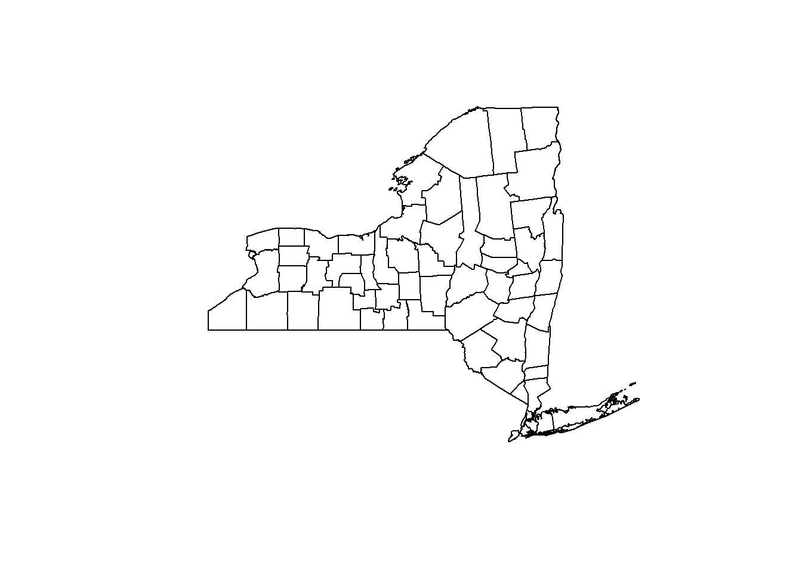
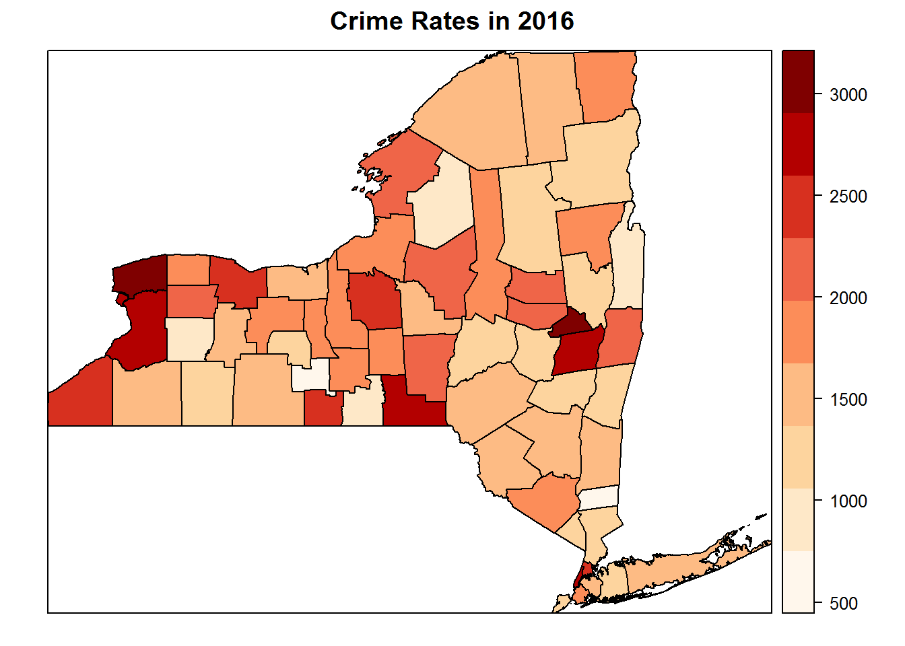
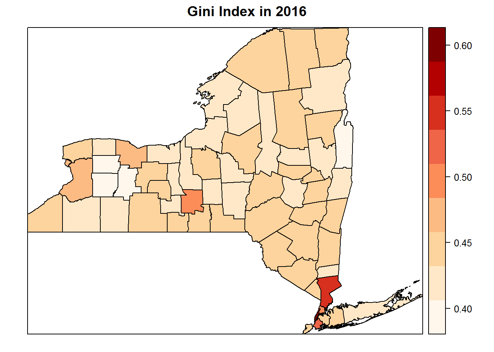
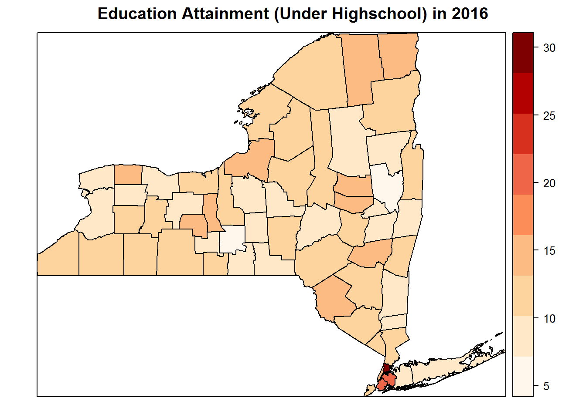
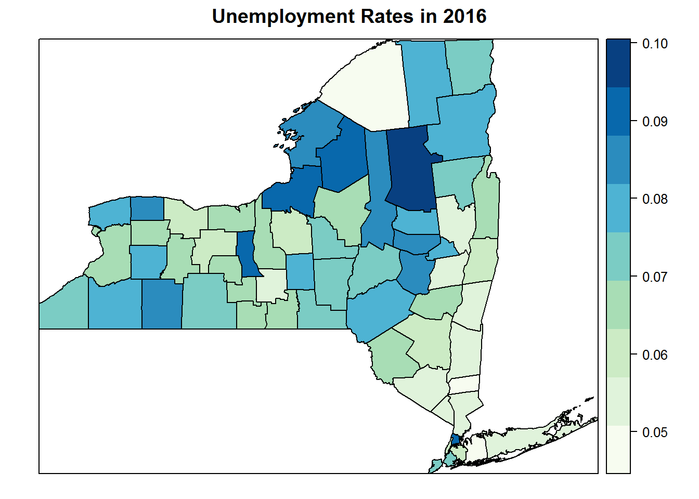

According to the 2016 Annual DCJS Performance Report, for the year 2016, crime in New York State reached its lowest point with 375,962 index crimes reported, the fewest since reporting began in 1975. New York is the safest large state among those in the nation with a population of more than 10 million and had the lowest incarceration rate among those states. Based on such a good news, this project conduct a simple analysis to figure out the following questions,
What is the distribution of crime rates of New York State at county level?
What are the contributing factors to crimes in New York State among 2016?
There are many factors that can influence the crime rates, and economy and education may be the significant factors among them. In terms of economy, this project used both income inequality (Gini index) and unemployment rate as independent variables that indicate the economic condition. While for education condition, the proportion of adults without degrees higher than high school is taken as the independent variables. Therefore, the project starts with the following hypothesis,
The crime rates are high in those counties with high population density, such as Bronx, New York and Manhattan.
All of the income inequality (Gini index), education attainment, and unemployment rate have significant contributions to crime rates.
This project provides maps for distributions of crime rates, Gini index, education attainment and unemployment rates in New York State and apply multiple regression model to study the significant contributing factor of crime rates.
Data Source:
Crime Rates Data: From The Division of Criminal Justice Services
Gini Index, Education Attainment, Unemployment Rate: From United States Census Bureau
Proposed Method:
Data Processing: Dowloading data, selecting information of interest, formatting data.
Data Visualizaion: Visualizing the distribution of dependent variables(Crime Rates) and independent variables(Gini Index, Education attainment, Unemployment Rate) over 62 counties in NY State.
Multiple Regression Model: Building Multiple Regression Model by setting Crime rates as dependent variables and Gini Index, education attainment, unemployment rate as independent variables. The output will provide coefficients of the independent varables, which provide knowledge for evluating the influence of these fators on Crimes.
Loading required packages:
library(dplyr)
library(sp)
library(maptools)
library(gstat)
library(rgdal)
library(raster)
library(tigris)
library(RColorBrewer)DownLoad Data:
#Download Spatial Data using raster package.
us=getData('GADM', country='USA', level=2) #Download US Boundaries
ny<-subset(us,NAME_1=='New York') #Subset New York state
ny<-subset(ny,NAME_2!='Lake Ontario') #Remove Ontario Lake
plot(ny)
#Reading Census in the data folder
CensusData <- read.csv("https://raw.githubusercontent.com/penghangliu/RDataScience_Project/master/data/NYCensus2016.csv",stringsAsFactors = FALSE)
#Download Crime data from New York State Gov
CrimeData <- read.csv("https://data.ny.gov/resource/vi5m-jckw.csv",stringsAsFactors = FALSE)Data Wrangling:
CrimeData <- filter(CrimeData, year==2016)
CrimeData$county[CrimeData$county=='St Lawrence']<-'Saint Lawrence'
data<-left_join(CrimeData,CensusData,by="county")
data_merge <- geo_join(ny, data, "NAME_2", "county")These are the variables in the data:
names(data_merge)## [1] "OBJECTID" "ID_0" "ISO"
## [4] "NAME_0" "ID_1" "NAME_1"
## [7] "ID_2" "NAME_2" "HASC_2"
## [10] "CCN_2" "CCA_2" "TYPE_2"
## [13] "ENGTYPE_2" "NL_NAME_2" "VARNAME_2"
## [16] "county" "firearm_count" "firearm_rate"
## [19] "index_count" "index_rate" "population"
## [22] "property_count" "property_rate" "violent_count"
## [25] "violent_rate" "year" "Gini_Index"
## [28] "under_highschool" "highschool" "college"
## [31] "bachelor_above" "unemployment"Data Visualization:
spplot(data_merge["index_rate"],
col.regions = brewer.pal(n = 9, name = "OrRd"),
cuts = 8,
main = "Crime Rates in 2016")
spplot(data_merge["Gini_Index"],
col.regions = brewer.pal(n = 9, name = "OrRd"),
cuts = 8,
main = "Gini Index in 2016")
spplot(data_merge["under_highschool"],
col.regions = brewer.pal(n = 9, name = "OrRd"),
cuts = 8,
main = "Education Attainment (Under Highschool) in 2016")
spplot(data_merge["unemployment"],
col.regions = brewer.pal(n = 9, name = "GnBu"),
cuts = 8,
main = "Unemployment Rates in 2016")
To be continued…
To be continued…
To be continued…